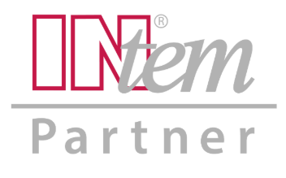

Marion Seßler
Über 30 Jahre Erfahrung in nachhaltiger Veränderung.
Menschlich. Herzlich. Souverän.
Über 30 Jahre Erfahrung in nachhaltiger Veränderung.
Marion Seßler hat sich über mehrere Jahrzehnte hinweg ein tiefes methodisches und praktisches Fundament in der Trainings- und Coaching-Branche aufgebaut. Bei der INtem® Trainergruppe Seßler & Partner GmbH verantwortete sie über viele Jahre die Entwicklung und Konzeption von Trainings, die Betreuung von Lizenzpartnern sowie die Ausbildung von Trainer:innen und Coaches. Berufsbegleitend erwarb sie zusätzlich einen Master of Business Administration mit Schwerpunkt Marketing und Personalmanagement.
Wie tragen Training und Coaching nachhaltig zur Verhaltensänderung und zur Bildung neuer Gewohnheiten bei – und damit zum Unternehmenserfolg oder zur eigenen Zielerreichung? Genau darauf liegt der Fokus von Marion Seßler: die Umsetzung und Anwendung des Erlernten im Alltag, fundiert durch die neuesten Erkenntnisse der Hirnforschung, der Neuro-Didaktik sowie der Positiven Psychologie.
Für ein von ihr entwickeltes Konzept zur Führungskräfteausbildung ("Verkaufs-Training zum Coach on the job") erhielt Marion Seßler beim Deutschen Trainings-Preis Silber in der Kategorie Dienstleister. Insgesamt wurde Marion Seßler für ihre Konzepte in der Personalentwicklung über 20 Mal mit nationalen und internationalen Preisen ausgezeichnet.
Rund 35 Jahre Erfahrung in der Entwicklung und Durchführung von Trainings, Coachings und Ausbildungsprogrammen – gepaart mit einem betriebswirtschaftlichen Blick durch den MBA. Diese Kombination aus praktischer Trainingserfahrung, psychologischem Handwerkszeug und unternehmerischem Verständnis prägt bis heute die Arbeit von Marion Seßler.
Für ihre Arbeit mit Menschen und Unternehmen steht Marion Seßler ein starkes Netzwerk erfahrener Partner zur Seite.
Sie erfahren, was Sie wirklich antreibt und wie Sie natürlicherweise handeln – und bekommen dadurch mehr Klarheit über eigene Stärken, blinde Flecken und das Umfeld, in dem Sie am besten zur Entfaltung kommen.
Mehr erfahren →Sie sehen ehrlich, wo Ihre Fähigkeiten heute stehen – im Vergleich zu dem, was eine Aufgabe oder Position wirklich braucht. Das gibt Orientierung für die nächsten sinnvollen Entwicklungsschritte.
Mehr erfahren →Sie bekommen ein klares Bild davon, was Ihnen im Arbeitsalltag Kraft raubt und was Ihnen Kraft gibt – und damit die Basis, um bewusster mit der eigenen Energie umzugehen, bevor daraus Erschöpfung wird.
Mehr erfahren →Sie lösen belastende, oft tief verwurzelte Muster, die Ihnen bisher im Weg standen – und gewinnen dadurch mehr Leichtigkeit, Klarheit und Handlungsfähigkeit in genau den Themen, die Sie seit Langem beschäftigen.
Mehr erfahren →Sie erkennen, welche Motive Sie wirklich bewegen und wie viel Kraft dahintersteckt – ein Wissen, das Ihnen hilft, Entscheidungen zu treffen, die wirklich zu Ihnen passen.
Mehr erfahren →
Über das INtem®-Trainernetzwerk, dem Marion Seßler seit 1992 als Partnerin verbunden ist, profitieren Sie von praxiserprobten Trainingsansätzen für Verkauf, Führung und Persönlichkeitsentwicklung – mit messbaren Ergebnissen im Arbeitsalltag.
Mehr erfahren →